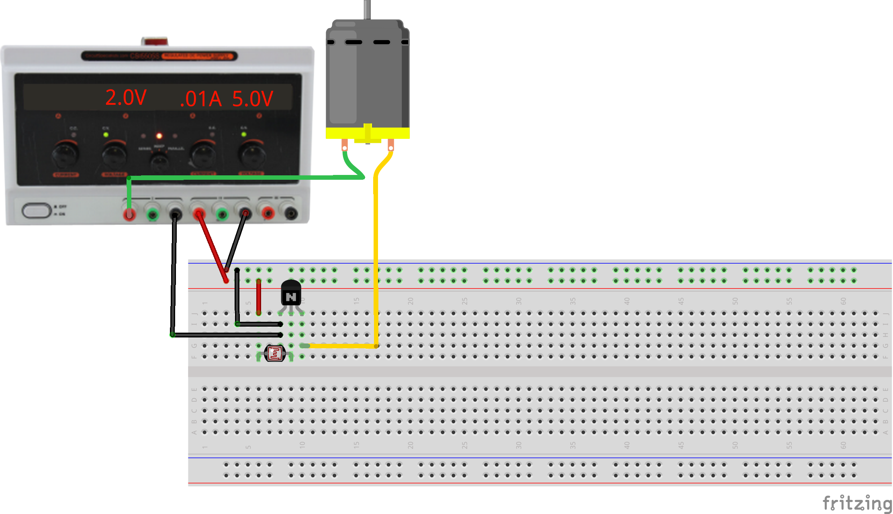
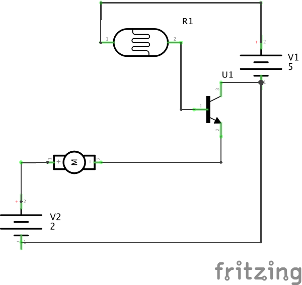

Connect light to motion via electricity.
This exercise uses a single-input single-output system which couples a light level to a motor activation. A photoresistor modulates the base current of a bipolar transistor, controlling the current flowing through the collector and emitter to operate a motor. This represents one possible minimal solution to the first graded assignment.
This is an analog circuit inasmuch as the photoresistor current can be set to keep the transistor operating in a linear range, continuously varying the motor speed. If the base current is high or low enough, the transistor will either saturate or shutoff and act as a digital device in that it will simply be ON or OFF.
In practice, transistor circuits usually have additional bias resistors to supply positive or negative currents to keep the transistor operating in the desired region. This is a deep topic which leads into the art of analog circuit design. For an idea of this, look up “audio circuits” on Google Images and see what comes out.
This circuit is a very simple example of a class-A amplifier using a common-emitter topology; there are many other types of amplifying transistor circuits. In general we will use PWM to control motor speed using a simple type of class-D amplifier for better power efficiency.
 